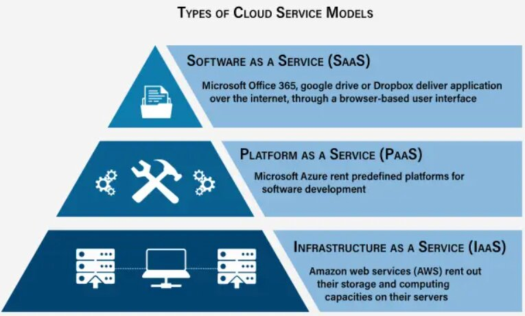
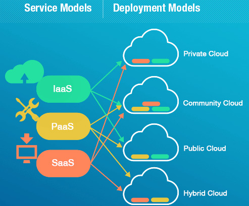

Cloud Technologies
Modern computing has shifted from local hardware to distributed networks. Cloud technologies enable on-demand access to computing resources, platforms, and software over the internet, revolutionizing both business and government sectors.
Learning Objectives
- 11.1.2.6 Describe cloud computing models (IaaS, PaaS, SaaS) and deployment types.
- 11.1.2.7 Evaluate the impact of cloud technologies on e-Government services.
Expert Explanation: IaaS, PaaS, SaaS
Conceptual Anchor
The Electricity Analogy
Before the electrical grid, every factory had its own generator. It was expensive and inefficient. Then came the power grid — electricity generated centrally and delivered on demand. You pay only for what you use.
Cloud computing does the same for IT: instead of buying servers, you rent capacity from providers like AWS, Google Cloud, or Azure.
Rules & Theory
Service Models (SPI)
Cloud services are categorized into three main models based on the level of control provided to the user versus what is managed by the vendor.

| Model | Description | Target Audience | Examples |
|---|---|---|---|
| IaaS (Infrastructure as a Service) |
Provides raw virtualized computing resources (servers, storage, networking). You install the OS and software. | System Administrators / IT Architects | AWS EC2, Google Compute Engine |
| PaaS (Platform as a Service) |
Provides hardware and a software framework. You focus solely on writing and deploying code without worrying about server maintenance. | Software Developers | Google App Engine, Heroku |
| SaaS (Software as a Service) |
Fully functional applications delivered over the web. You just use the software. | End Users | Google Workspace, Microsoft 365, Dropbox |
Deployment Models

Public Cloud
Services offered over the public internet to anyone. Resources are shared among multiple organizations (multi-tenant).
Private Cloud
Cloud infrastructure operated solely for a single organization. It can be hosted internally or externally. Maximum security.
Hybrid Cloud
A combination of Public and Private. Sensitive data stays on Private, while Public is used for scaling during high traffic.
Data Sovereignty
When you upload data to the cloud, it may be physically stored in a data center in another country. That country's laws apply to your data. For example, Kazakh student data stored on US servers could be subject to US law enforcement requests. This is a major concern for governments and organizations handling sensitive data.
E-Government (Electronic Government)
E-Government refers to the use of cloud computing and IT infrastructure to provide services to citizens and businesses efficiently. A prime example is the egov.kz portal in Kazakhstan.
- Centralized Database: Cloud servers link different ministries (health, tax, police) into a single system, reducing bureaucracy.
- 24/7 Accessibility: Citizens can request certificates, pay taxes, or register businesses online anytime via web portals or Telegram bots.
- Cost and Time Efficiency: Automating services saves millions of hours for both citizens and civil servants, eliminating physical queues.
Worked Examples
1 School Infrastructure Migration
Scenario: A school wants to stop maintaining its own email servers and student database hardware.
Solution:
- For Email: The school switches to a SaaS solution like Google Workspace for Education. The provider handles all maintenance, storage, and spam filtering.
- For the Custom Database: The school uses an IaaS solution to rent a virtual server in a local (Kazakh) data center. They install their own database software, ensuring compliance with data sovereignty laws.
Common Pitfalls
"The Cloud Is Just Someone Else's Computer"
While technically true, cloud providers offer much more: automatic scaling, redundancy, global distribution, and professional security that most organizations can't achieve alone.
Ignoring Exit Strategy
Students (and companies) forget to plan for leaving a cloud provider. Vendor lock-in can make migration extremely expensive and time-consuming. You must always plan how to retrieve your data.
Tasks
Define IaaS, PaaS, and SaaS. Give one real-world example of each.
Explain the concept of Data Sovereignty and why it is a critical issue for E-Government portals.
A startup company wants to develop a new mobile game but does not want to buy physical servers or install operating systems. Which service model (IaaS, PaaS, or SaaS) should they choose and why?
Evaluate the benefits and drawbacks of using a Hybrid Cloud deployment compared to a Public Cloud deployment for a major bank.
Self-Check Quiz
Q1: Which cloud service model is Google Docs an example of?
Q2: What is the main risk of failing to plan an "Exit Strategy" from a cloud provider?
Q3: Which deployment model involves sharing resources with other organizations over the internet?